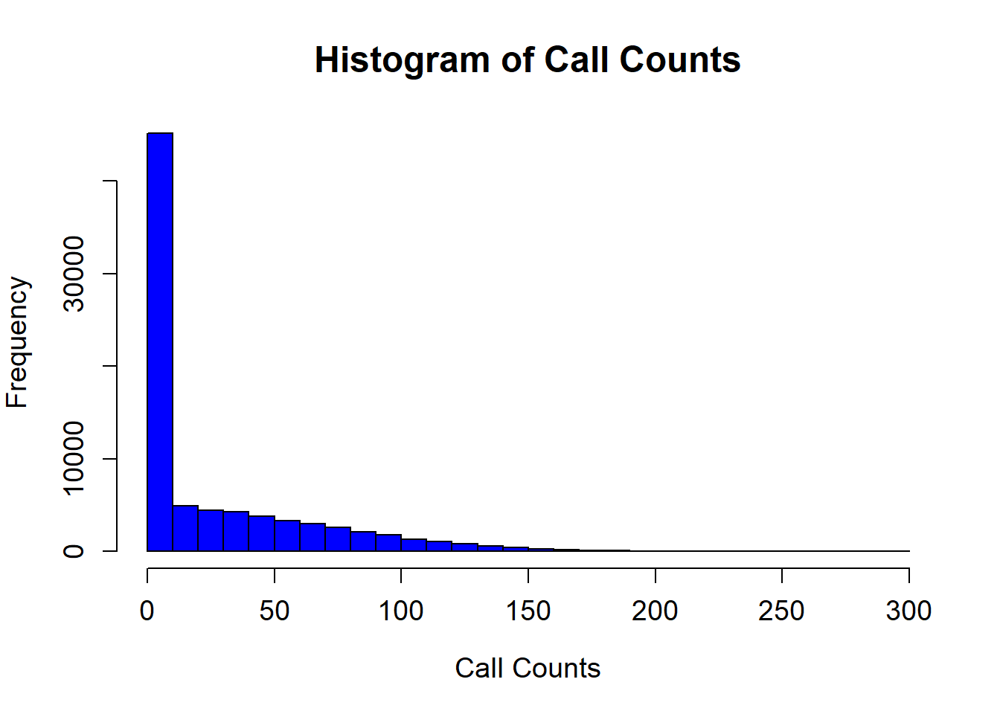
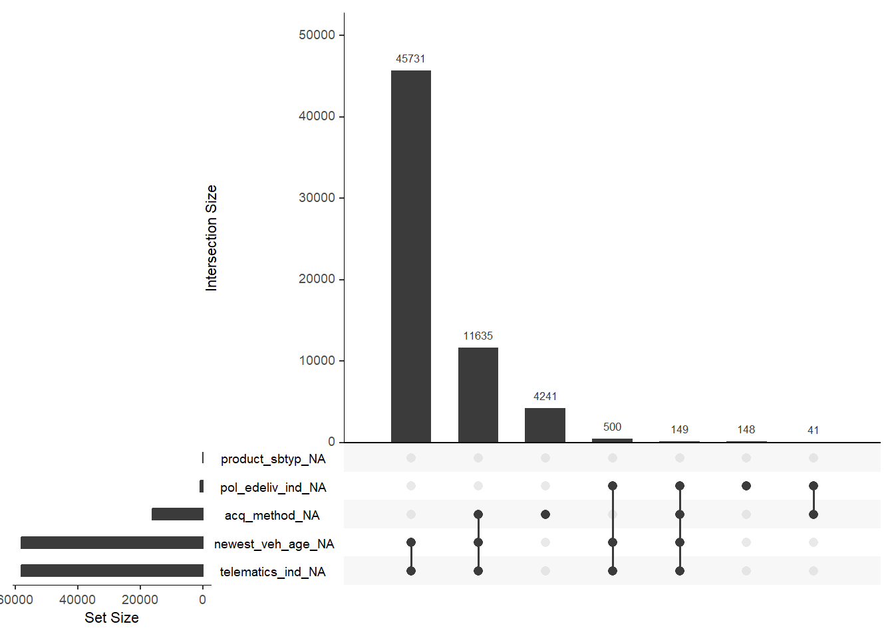
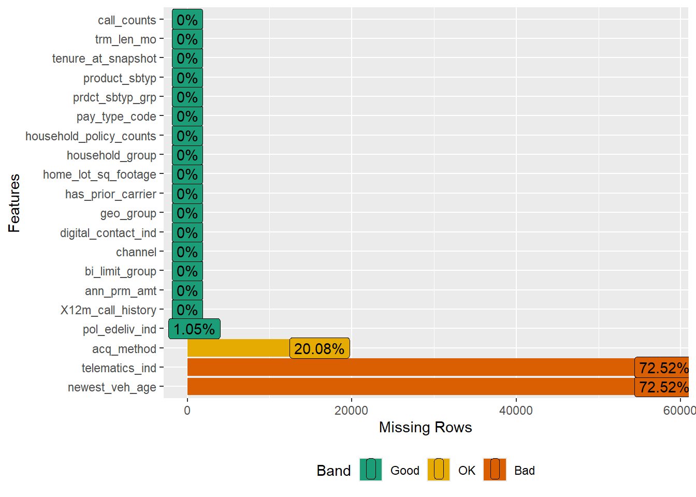
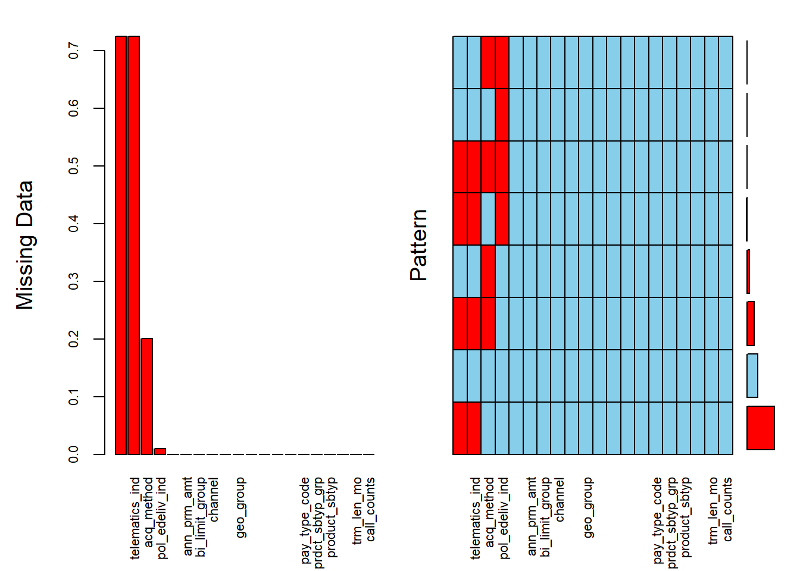
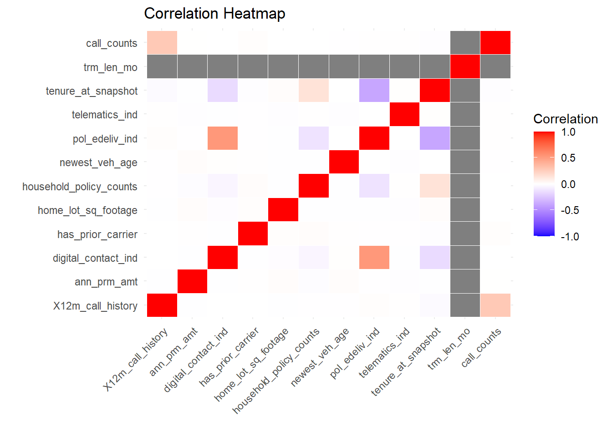
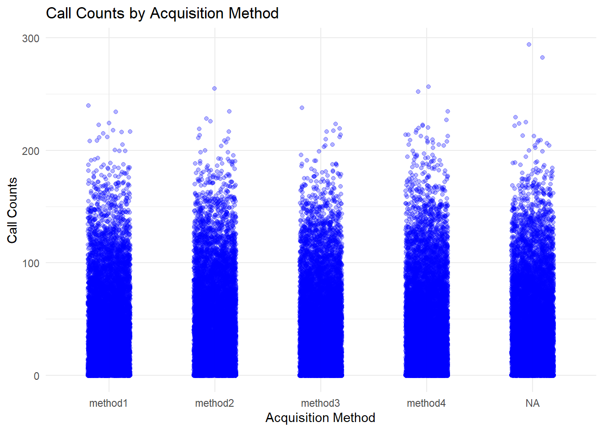
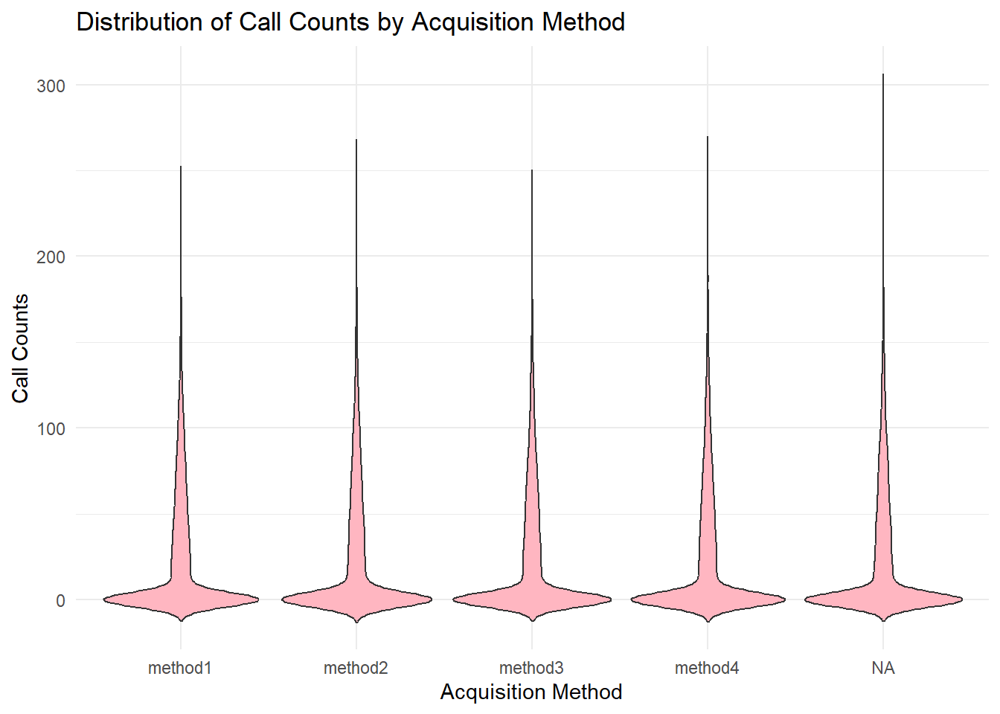
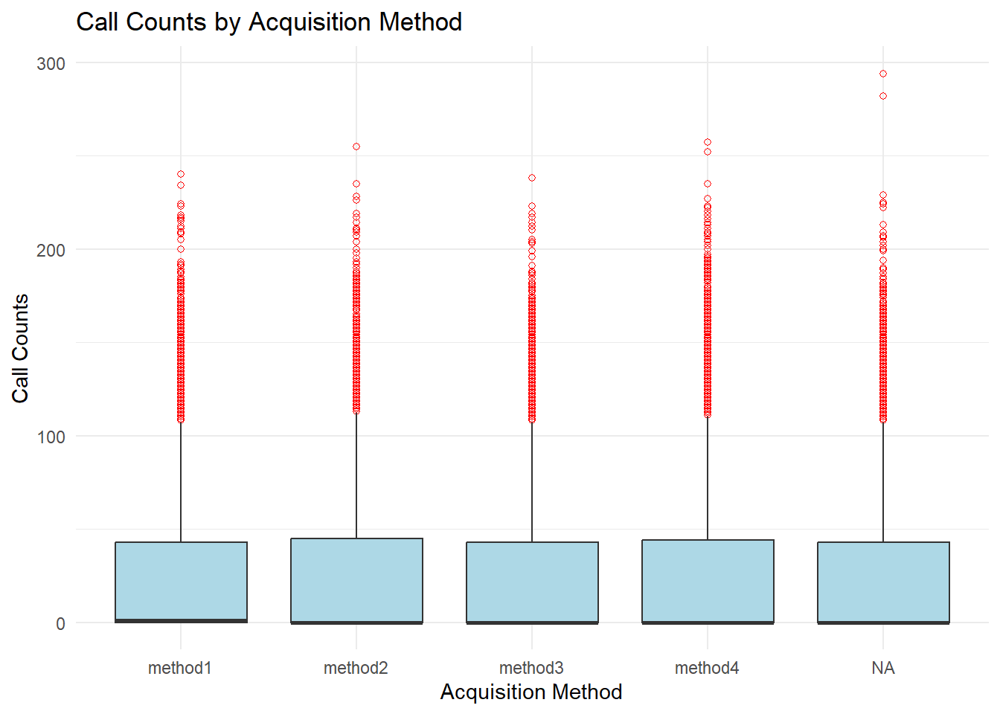

acq_method newest_veh_age pol_edeliv_ind telematics_ind
16066 58015 838 58015 [1] 50.18The data is split into two parts: training data and validation data. In the validation data, the target variable, call_counts, is omitted.
Variable Descriptions
ann_prm_amt: Annualized Premium Amount
bi_limit_group: Body injury limit group (SP stands for single split limit coverage, CSL stands for combined single limit coverage)
channel: Distribution channel
newest_veh_age: The age of the newest vehicle insured on a policy (-20 represents non-auto or missing values)
geo_group: Indicates if the policyholder lives in a rural, urban, or suburban area
has_prior_carrier: Did the policyholder come from another carrier
home_lot_sq_footage: Square footage of the policyholder’s home lot
household_group: The types of policy in household
household_policy_counts: Number of policies in the household
telematics_ind: Telematic indicator (0 represents auto missing values or didn’t enroll and -2 represents non-auto)
digital_contacts_ind: An indicator to denote if the policy holder has opted into digital communication
12m_call_history: Past one year call count
tenure_at_snapshot: Policy active length in month
pay_type_code: Code indicating the payment method
acq_mthd: The acquisition method (Miss represents missing values)
trm_len_mo: Term length month
pol_edeliv_ind: An indicator for email delivery of documents (-2 represents missing values)
product_sbtyp_grp: Product subtype group
product_sbtyp: Product subtype
call_counts: The number of call count generated by each policy (target variable)
First, we prepares the data by cleaning and transforming it (e.g., converting characters to factors, marking missing values). Then, analyzes the extent of missing data, calculates the percentage of zeros in the response variable (call_counts), which is important for modeling or imputation strategies.
These variables show the number of missing values: acq_method: 16,066 missing values. newest_veh_age: 58,015 missing values. pol_edeliv_ind: 838 missing values. telematics_ind: 58,015 missing values
Zero Values: 50.18% of the rows in the call_counts column are zeros, indicating that most customers made no calls. This is significant and might suggest using models like Zero-Inflated Poisson (ZIP) to handle the high frequency of zeros.
Key Takeaways - The dataset contains both numeric and categorical variables, with some columns having significant missing values. - The target variable (call_counts) is heavily zero-inflated and skewed, which may require specialized modeling approaches. - Some numeric variables, like ann_prm_amt and home_lot_sq_footage, have wide ranges and outliers, suggesting that data transformation or scaling may be beneficial.
acq_method newest_veh_age pol_edeliv_ind telematics_ind
16066 58015 838 58015 [1] 50.18


3.This visualization highlights missing data patterns in the dataset. The left panel shows that telematics_ind and newest_veh_age have the highest proportion of missing values (~70%), while pol_edeliv_ind has a smaller proportion (~10%). The right panel reveals that most rows have no missing data (blue squares), but missingness in telematics_ind and newest_veh_age often co-occurs. Other features have negligible or no missing data. It is recommended to either impute or exclude telematics_ind and newest_veh_age depending on their importance, while simpler imputation methods can handle pol_edeliv_ind.

Variables sorted by number of missings:
Variable Count
newest_veh_age 0.7251875
telematics_ind 0.7251875
acq_method 0.2008250
pol_edeliv_ind 0.0104750
X12m_call_history 0.0000000
ann_prm_amt 0.0000000
bi_limit_group 0.0000000
channel 0.0000000
digital_contact_ind 0.0000000
geo_group 0.0000000
has_prior_carrier 0.0000000
home_lot_sq_footage 0.0000000
household_group 0.0000000
household_policy_counts 0.0000000
pay_type_code 0.0000000
prdct_sbtyp_grp 0.0000000
product_sbtyp 0.0000000
tenure_at_snapshot 0.0000000
trm_len_mo 0.0000000
call_counts 0.0000000The correlations output show that X12m_call_history (r=0.28) is the strongest numeric predictor of call_counts, with a moderate positive relationship. Other variables like telematics_ind (𝑟=0.0059) and pol_edeliv_ind (𝑟=0.0049) have very weak positive correlations, while variables like household_policy_counts (r=−0.0033) and newest_veh_age (r=−0.0030) have negligible negative correlations. Most numeric variables show correlations close to zero, suggesting little to no linear relationship with the target variable. Overall, X12m_call_history is the most promising numeric predictor, while others may require further evaluation for relevance in modeling.
X12m_call_history ann_prm_amt digital_contact_ind
0.2799527640 0.0009293953 0.0026141348
has_prior_carrier home_lot_sq_footage household_policy_counts
0.0005052426 0.0009486643 -0.0033470952
newest_veh_age pol_edeliv_ind telematics_ind
-0.0030184309 0.0048667762 0.0058867474
tenure_at_snapshot trm_len_mo call_counts
-0.0014746341 0.0007817227 1.0000000000 Correlation Matrix: The correlation heatmap shows that X12m_call_history has the strongest positive correlation (r≈0.28) with call_counts, making it the most important numeric predictor. Most other variables, such as ann_prm_amt, household_policy_counts, and home_lot_sq_footage, have weak or no significant correlations with the target variable, as indicated by grey cells. There are no strong negative correlations in the dataset. Overall, the relationships are mostly weak, suggesting that non-linear models or feature engineering may be needed to capture more complex interactions. The heatmap helps identify X12m_call_history as a key feature while others may contribute less linearly.

The ANOVA results evaluate the effect of categorical variables on call_counts. Among the predictors, acq_method is marginally significant (p=0.0518), suggesting it may have a weak influence on call_counts. All other categorical variables, such as bi_limit_group, channel, and geo_group, have p-values greater than 0.1, indicating no statistically significant relationship with the target variable. Additionally, 16,066 rows were excluded due to missing data, which might affect the robustness of the results. It is recommended to focus on acq_method for further analysis and consider handling missing data to improve model accuracy.
$acq_method
Df Sum Sq Mean Sq F value Pr(>F)
trav[[var]] 3 11110 3703 2.579 0.0518 .
Residuals 63930 91805237 1436
---
Signif. codes: 0 '***' 0.001 '**' 0.01 '*' 0.05 '.' 0.1 ' ' 1
16066 observations deleted due to missingness
$bi_limit_group
Df Sum Sq Mean Sq F value Pr(>F)
trav[[var]] 7 2207 315.3 0.22 0.981
Residuals 79992 114719475 1434.1
$channel
Df Sum Sq Mean Sq F value Pr(>F)
trav[[var]] 1 146 146.2 0.102 0.75
Residuals 79998 114721536 1434.1
$geo_group
Df Sum Sq Mean Sq F value Pr(>F)
trav[[var]] 2 5412 2706 1.887 0.152
Residuals 79997 114716270 1434
$household_group
Df Sum Sq Mean Sq F value Pr(>F)
trav[[var]] 3 2624 874.7 0.61 0.608
Residuals 79996 114719058 1434.1
$pay_type_code
Df Sum Sq Mean Sq F value Pr(>F)
trav[[var]] 2 117 58.7 0.041 0.96
Residuals 79997 114721565 1434.1
$prdct_sbtyp_grp
Df Sum Sq Mean Sq F value Pr(>F)
trav[[var]] 2 1861 930.6 0.649 0.523
Residuals 79997 114719821 1434.1
$product_sbtyp
Df Sum Sq Mean Sq F value Pr(>F)
trav[[var]] 2 117 58.7 0.041 0.96
Residuals 79997 114721565 1434.1 Call_counts distribution with significant predictor [Note: Should keep only one] The violin plot shows the distribution of call_counts across different acquisition methods (acq_method). All methods have a heavily skewed distribution, with most values near 0 and a few extreme outliers, indicating that the majority of customers make few calls. The distributions are nearly identical across all methods, including the NA category, suggesting that acq_method has minimal impact on call_counts. This aligns with the ANOVA results, where acq_method was marginally significant. Further analysis, such as handling outliers or exploring interactions with other variables, may provide additional insights.



Before diiging with the model fit we’ll split the data set.The dataset splits into training (60%), validation (20%), and test (20%) sets, ensuring stratification of the call_counts variable. Stratification preserves the distribution of call_counts across all subsets, confirmed by the nearly identical means of the subsets. The training set is used to build the model, the validation set is used for tuning and performance assessment during training, and the test set is reserved for final evaluation. This ensures unbiased and representative splits for reliable model training and testing.
[1] 25.93654[1] 25.88844[1] 25.85405Model - 1: GBM We trained a GBM model using 500 trees with a Poisson distribution to predict call_counts. The model achieved an RMSE of 36.06, indicating moderate prediction error, suggesting the predictions deviate by about 36 calls on average from actual values. This result highlights potential room for improvement, such as hyperparameter tuning (e.g., adjusting n.tree, interaction.depth, or shrinkage), feature engineering, or handling outliers in the data. Comparing this RMSE with other models can help identify the best-performing approach.
[1] 36.05584Model - 2: ZIP The Zero-Inflated Poisson (ZIP) model predicts call_counts while accounting for excess zeros. In the count model, X12m_call_history and prdct_sbtyp_grp significantly influence the count of call_counts, with higher X12m_call_history associated with increased counts. In the zero-inflation model, X12m_call_history reduces the likelihood of excess zeros, while prdct_sbtyp_grp has no significant effect on zero counts. The model effectively handles the over-representation of zeros and identifies X12m_call_history as a key predictor for both count and zero-inflation processes. Further evaluation against simpler models (e.g., Poisson) or adding more predictors may enhance its performance.
```{r-2, echo=FALSE}
#Method 2 - ZIP
library(pscl)
zip_model <- zeroinfl(call_counts ~ X12m_call_history+prdct_sbtyp_grp, data = train_data, dist = “poisson”)
summary(zip_model)
\newpage
# Appendix A - R Code
[Haven't put all codes]
::: {.cell}
```{.r .cell-code}
library(caret)
library(dplyr)
library(mice)
trav <- read.csv("train_data.csv")
#Exclude first column (ID column)
trav <- trav[,-1]
trav <- trav %>%
mutate(across(where(is.character), as.factor))
trav[trav == -2 |trav == -20 | trav == "missing"] <- NA
missing_counts <- colSums(is.na(trav))
# Display variables with missing values and their counts
missing_counts[missing_counts > 0]
#Zero values for the response
per0resp <- sum(trav$call_counts == 0) / nrow(trav) * 100
per0resp:::